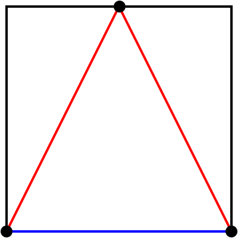
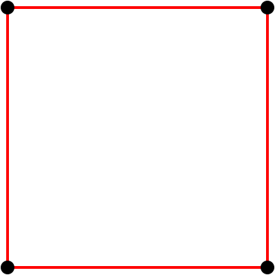
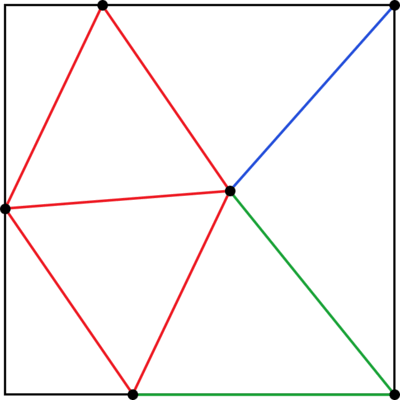
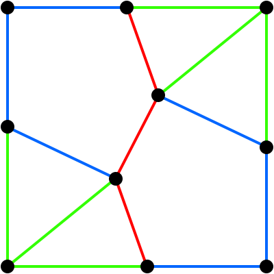
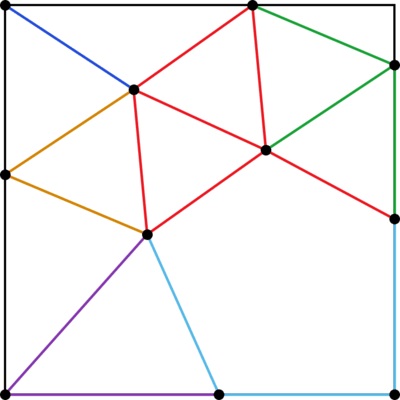
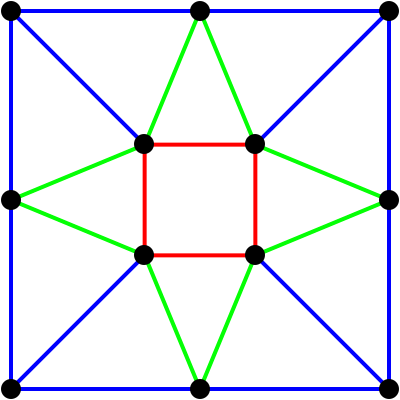
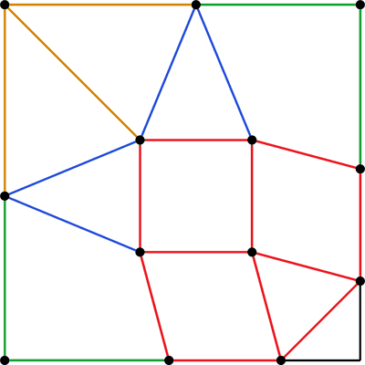
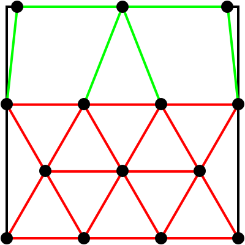
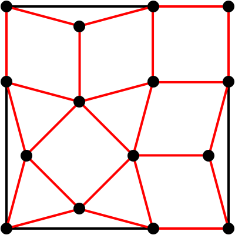
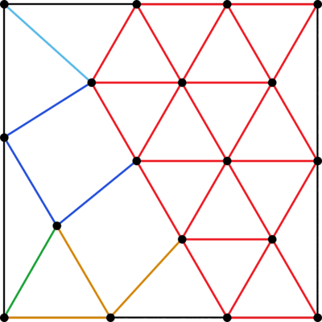

S = 2√2 = 2.828+
Trivial.

S = 2 + √5/2 = 3.118+
Found by Erich Friedman
in November 2024.

S = 4
Trivial.
| 2. S = 2√2 = 2.828+ Trivial. | 3.  S = 2 + √5/2 = 3.118+ Found by Erich Friedman in November 2024. | 4.  S = 4 Trivial. |
5. S = 2 + 3√(3/2) + 3/√2 = 3.552+ Found by Erich Friedman in November 2024. | 6.  S = 3.625+ Found by Erich Friedman in November 2026. | 7. S = 24 – 3√2 – 12√3 + 2√6 = 3.871+ Found by Erich Friedman in November 2024. |
8. S = 4√6 – 4√2 = 4.414+ Found by Erich Friedman in November 2024. | 9. S = 9/2 = 4.500 Trivial. | 10.  S = 4.366+ Found by Erich Friedman in November 2024. |
| 11.  S = 4.501+ Found by Erich Friedman in November 2026. | 12.  S = 6 – 2 √2 + 2√(2 – √2) = 4.702+ Found by Erich Friedman in November 2026. | 13.  S = 4.806+ Found by Erich Friedman in November 2024. |
| 14.  S = 4.971+ Found by Erich Friedman in November 2024. | 15.  S = 15(1 + √2 – √3)/2 = 5.116+ Found by Erich Friedman in November 2026. | 16. S = 16/3 = 5.333+ Trivial. |
17. S = 5.113+ Found by Erich Friedman in November 2026. | 18.  S = 3√13/2 = 5.408+ Found by Erich Friedman in November 2024. | 20. S = (30 – 5√2)/4 = 5.732+ Found by Erich Friedman in 2024. |